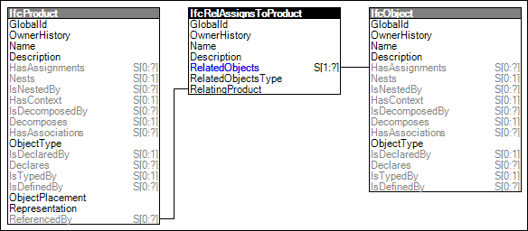

Products may have assignments indicating processes that operate upon the product. An example of such assignment is a task to construct a wall.
Figure 42 illustrates an instance diagram.

Figure 42 — Product Assignment
Link to this page
 Link to this page
Link to this page